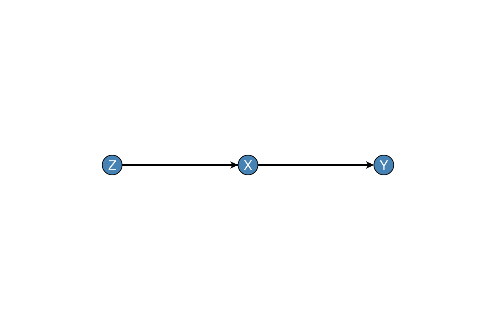

DAGMakie.jl
Publication-ready visualisation of Directed Acyclic Graphs (DAGs) for causal inference.
DAGMakie provides clean, minimal DAG visualisation with sensible defaults for academic papers and presentations. It builds on GraphMakie.jl with features specifically designed for causal diagrams.
Features
- Automatic label alignment: Labels positioned to avoid edge overlaps
- Publication-ready themes: Clean styling with no axes or grids
- Causal diagram conventions: Support for observed, latent, treatment, and outcome nodes
- Common patterns: Convenience functions for chain, fork, collider, confounding DAGs
- Bidirected edges: Support for unmeasured confounding (↔)
- Causal analysis: d-separation, backdoor paths, adjustment sets
- Interventions: do-operator visualisation and graph surgery
Installation
using Pkg
Pkg.add("DAGMakie")v0.1.0 is pending AutoMerge in the General registry. Until that lands:
Pkg.add(url="https://github.com/SimonAB/DAGMakie.jl")Or for development:
Pkg.develop(url="https://github.com/SimonAB/DAGMakie.jl")Quick Example
using Graphs, DAGMakie, CairoMakie
# Create a confounding DAG: Z → X → Y, Z → Y
g = SimpleDiGraph(3)
add_edge!(g, 1, 2) # Z → X
add_edge!(g, 1, 3) # Z → Y
add_edge!(g, 2, 3) # X → Y
# Plot with labels
fig, ax, p = dagplot(g, nlabels=["Z", "X", "Y"])
fig